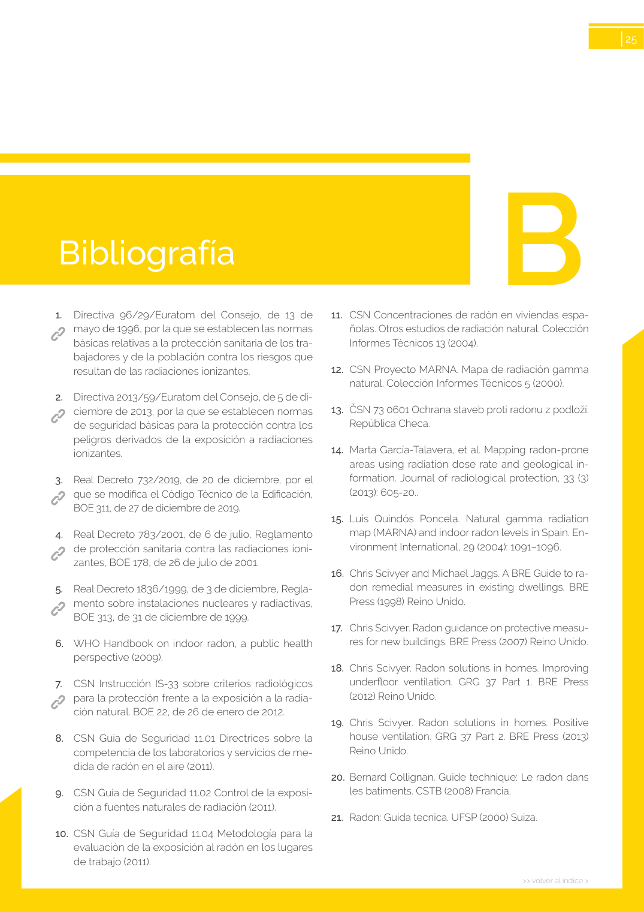

GUIA · B · versión sin-fecha · capa guia
Formatos: JSON compacto · Markdown · PDF fuente
Ámbito del documento · texto del ámbito · documento y tablas
Tipo: referencias, tablas, figuras · nivel 3 · sección estimada: Guía de elección · padre: a0055
B >> volver al índice > 25 1. Directiva 96/29/Euratom del Consejo, de 13 de mayo de 1996, por la que se establecen las normas básicas relativas a la protección sanitaria de los tra bajadores y de la población contra los riesgos que resultan de las radiaciones ionizantes. 2.Directiva 2013/59/Euratom del Consejo, de 5 de di ciembre de 2013, por la que se establecen normas de seguridad básicas para la protección contra los peligros derivados de la exposición a radiaciones ionizantes. 3. Real Decreto 732/2019, de 20 de diciembre, por el que se modifica el Código Técnico de la Edificación, BOE 311, de 27 de diciembre de 2019. 4.Real Decreto 783/2001, de 6 de julio, Reglamento de protección sanitaria contra las radiaciones ioni zantes, BOE 178, de 26 de julio de 2001. 5.Real Decreto 1836/1999, de 3 de diciembre, Regla mento sobre instalaciones nucleares y radiactivas, BOE 313, de 31 de diciembre de 1999. 6.WHO Handbook on indoor radon, a public health perspective (2009). 7. CSN Instrucción IS-33 sobre criterios radiológicos para la protección frente a la exposición a la radia ción natural. BOE 22, de 26 de enero de 2012. 8.CSN Guía de Seguridad 11.01 Directrices sobre la competencia de los laboratorios y servicios de me dida de radón en el aire (2011). 9.CSN Guía de Seguridad 11.02 Control de la exposi ción a fuentes naturales de radiación (2011). 10. CSN Guía de Seguridad 11.04 Metodología para la evaluación de la exposición al radón en los lugares de trabajo (2011). 11.CSN Concentraciones de radón en viviendas espa ñolas. Otros estudios de radiación natural. Colección Informes Técnicos 13 (2004). 12.CSN Proyecto MARNA. Mapa de radiación gamma natural. Colección Informes Técnicos 5 (2000). 13.ČSN 73 0601 Ochrana staveb proti radonu z podloží. República Checa. 14.Marta García-Talavera, et al. Mapping radon-prone areas using radiation dose rate and geological in formation. Journal of radiological protection, 33 (3) (2013): 605-20.. 15.LuisQuindós Poncela. Natural gamma radiation map (MARNA) and indoor radon levels in Spain. En vironment International, 29 (2004): 1091–1096. 16.Chris Scivyer and Michael Jaggs. A BRE Guide to ra don remedial measures in existing dwellings. BRE Press (1998) Reino Unido. 17.Chris Scivyer. Radon guidance on protective measu res for new buildings. BRE Press (2007) Reino Unido. 18.Chris Scivyer. Radon solutions in homes. Improving underfloor ventilation. GRG 37 Part 1. BRE Press (2012) Reino Unido. 19.Chris Scivyer. Radon solutions in homes. Positive house ventilation. GRG 37 Part 2. BRE Press (2013) Reino Unido. 20. Bernard Collignan. Guide technique: Le radon dans les batiments. CSTB (2008) Francia. 21.Radon: Guida tecnica. UFSP (2000) Suiza.

PDF fuente redistribuible: copia fiel enlazada en esta página (SHA256 verificado).